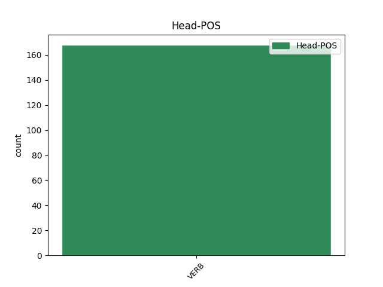
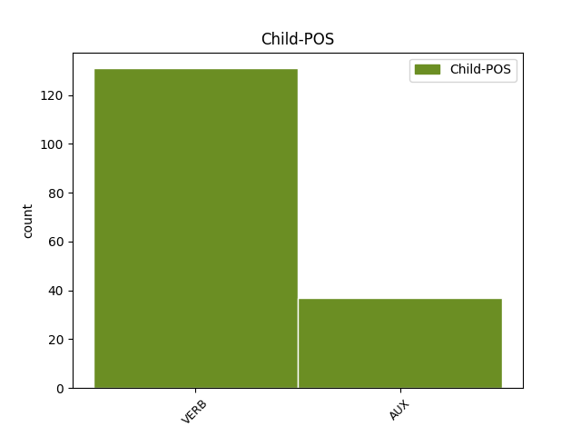

Distribution of features within this leaf



Agreement Rules sorted by frequency.
- When the dependent token is the conjunct(conj) of the head token, and the head token is VERB and the dependent token is VERB.
1 Pääsääntöisesti _ _ _ _ 0 _ _ _
2 väkiluvun _ _ _ _ 0 _ _ _
3 kasvusta _ _ _ _ 0 _ _ _
4 tuli _ _ _ _ 0 _ _ _
5 kuitenkin _ _ _ _ 0 _ _ _
6 maahanmuutosta _ _ _ _ 0 _ _ _
7 , _ _ _ _ 0 _ _ _
8 sillä _ _ _ _ 0 _ _ _
9 maahan _ _ _ _ 0 _ _ _
10 muutti muuttaa VERB V Mood=Ind|Number=Sing|Person=3|Tense=Past|VerbForm=Fin|Voice=Act 0 _ _ _
11 vuonna _ _ _ _ 0 _ _ _
12 2007 _ _ _ _ 0 _ _ _
13 25 900 _ _ _ _ 0 _ _ _
14 henkeä _ _ _ _ 0 _ _ _
15 ja _ _ _ _ 0 _ _ _
16 maasta _ _ _ _ 0 _ _ _
17 pois _ _ _ _ 0 _ _ _
18 muutti muuttaa VERB V Mood=Ind|Number=Sing|Person=3|Tense=Past|VerbForm=Fin|Voice=Act 10 conj _ _
19 12 400 _ _ _ _ 0 _ _ _
20 henkeä _ _ _ _ 0 _ _ _
21 . _ _ _ _ 0 _ _ _
1 Suomen _ _ _ _ 0 _ _ _
2 väliluvun _ _ _ _ 0 _ _ _
3 kasvu _ _ _ _ 0 _ _ _
4 oli olla AUX V Mood=Ind|Number=Sing|Person=3|Tense=Past|VerbForm=Fin|Voice=Act 0 _ _ _
5 suurinta _ _ _ _ 0 _ _ _
6 15 _ _ _ _ 0 _ _ _
7 vuoteen _ _ _ _ 0 _ _ _
8 ja _ _ _ _ 0 _ _ _
9 vuoden _ _ _ _ 0 _ _ _
10 lopulla _ _ _ _ 0 _ _ _
11 väkiluku _ _ _ _ 0 _ _ _
12 yltää yltää VERB V Mood=Ind|Number=Sing|Person=3|Tense=Pres|VerbForm=Fin|Voice=Act 4 conj _ _
13 5,5 _ _ _ _ 0 _ _ _
14 miljoonaan _ _ _ _ 0 _ _ _
15 , _ _ _ _ 0 _ _ _
16 arvioi _ _ _ _ 0 _ _ _
17 Tilastokeskus _ _ _ _ 0 _ _ _
18 . _ _ _ _ 0 _ _ _
1 Kurssi _ _ _ _ 0 _ _ _
2 jatkoi jatkaa VERB V Mood=Ind|Number=Sing|Person=3|Tense=Past|VerbForm=Fin|Voice=Act 0 _ _ _
3 kuitenkin _ _ _ _ 0 _ _ _
4 jyrkkää _ _ _ _ 0 _ _ _
5 syöksyä _ _ _ _ 0 _ _ _
6 markkinoilla _ _ _ _ 0 _ _ _
7 , _ _ _ _ 0 _ _ _
8 minkä _ _ _ _ 0 _ _ _
9 johdosta _ _ _ _ 0 _ _ _
10 euro _ _ _ _ 0 _ _ _
11 maksoi maksaa VERB V Mood=Ind|Number=Sing|Person=3|Tense=Past|VerbForm=Fin|Voice=Act 2 mod@relcl _ _
12 jo _ _ _ _ 0 _ _ _
13 265 _ _ _ _ 0 _ _ _
14 kruunua _ _ _ _ 0 _ _ _
15 . _ _ _ _ 0 _ _ _
1 Jos _ _ _ _ 0 _ _ _
2 vanhemmat _ _ _ _ 0 _ _ _
3 elävät _ _ _ _ 0 _ _ _
4 useita _ _ _ _ 0 _ _ _
5 vuosia _ _ _ _ 0 _ _ _
6 yhdessä _ _ _ _ 0 _ _ _
7 , _ _ _ _ 0 _ _ _
8 saattaa saattaa AUX V Mood=Ind|Number=Sing|Person=3|Tense=Pres|VerbForm=Fin|Voice=Act 0 _ _ _
9 yksittäinen _ _ _ _ 0 _ _ _
10 poikanen _ _ _ _ 0 _ _ _
11 elää elää VERB V Mood=Ind|Number=Sing|Person=3|Tense=Pres|VerbForm=Fin|Voice=Act 8 comp:aux _ _
12 ryhmässä _ _ _ _ 0 _ _ _
13 jopa _ _ _ _ 0 _ _ _
14 kuusi _ _ _ _ 0 _ _ _
15 vuotta _ _ _ _ 0 _ _ _
16 muodostamatta _ _ _ _ 0 _ _ _
17 omaa _ _ _ _ 0 _ _ _
18 ryhmää _ _ _ _ 0 _ _ _
19 tai _ _ _ _ 0 _ _ _
20 siirtymättä _ _ _ _ 0 _ _ _
21 muualle _ _ _ _ 0 _ _ _
22 . _ _ _ _ 0 _ _ _
1 Juoksin juosta VERB V Mood=Ind|Number=Sing|Person=1|Tense=Past|VerbForm=Fin|Voice=Act 0 _ _ _
2 , _ _ _ _ 0 _ _ _
3 juoksin juosta VERB V Mood=Ind|Number=Sing|Person=1|Tense=Past|VerbForm=Fin|Voice=Act 1 appos _ _
4 niin _ _ _ _ 0 _ _ _
5 kauas _ _ _ _ 0 _ _ _
6 kuin _ _ _ _ 0 _ _ _
7 jaksoin _ _ _ _ 0 _ _ _
8 . _ _ _ _ 0 _ _ _
1 Luostarinvuoren _ _ _ _ 0 _ _ _
2 lukiolaiset _ _ _ _ 0 _ _ _
3 pohtivat _ _ _ _ 0 _ _ _
4 myös _ _ _ _ 0 _ _ _
5 , _ _ _ _ 0 _ _ _
6 että _ _ _ _ 0 _ _ _
7 oli olla VERB V Mood=Ind|Number=Sing|Person=3|Tense=Past|VerbForm=Fin|Voice=Act 15 mod _ _
8 valintakokeita _ _ _ _ 0 _ _ _
9 tai _ _ _ _ 0 _ _ _
10 ei _ _ _ _ 0 _ _ _
11 , _ _ _ _ 0 _ _ _
12 opiskelupaikkoihin _ _ _ _ 0 _ _ _
13 liittyvästä _ _ _ _ 0 _ _ _
14 rahastuksesta _ _ _ _ 0 _ _ _
15 ei ei AUX V Number=Sing|Person=3|Polarity=Neg|VerbForm=Fin|Voice=Act 0 _ _ _
16 päästä _ _ _ _ 0 _ _ _
17 eroon _ _ _ _ 0 _ _ _
18 . _ _ _ _ 0 _ _ _
1 Tutkijoiden _ _ _ _ 0 _ _ _
2 tavoitteena _ _ _ _ 0 _ _ _
3 on olla AUX V Mood=Ind|Number=Sing|Person=3|Tense=Pres|VerbForm=Fin|Voice=Act 0 _ _ _
4 tunnistaa tunnistaa VERB V Mood=Ind|Number=Sing|Person=3|Tense=Pres|VerbForm=Fin|Voice=Act 3 subj@cop _ _
5 ne _ _ _ _ 0 _ _ _
6 neurologiset _ _ _ _ 0 _ _ _
7 mekanismit _ _ _ _ 0 _ _ _
8 , _ _ _ _ 0 _ _ _
9 jotka _ _ _ _ 0 _ _ _
10 ovat _ _ _ _ 0 _ _ _
11 ekstaasiin _ _ _ _ 0 _ _ _
12 liitettyjen _ _ _ _ 0 _ _ _
13 myönteisten _ _ _ _ 0 _ _ _
14 vaikutusten _ _ _ _ 0 _ _ _
15 taustalla _ _ _ _ 0 _ _ _
16 . _ _ _ _ 0 _ _ _
1 Palkitusta _ _ _ _ 0 _ _ _
2 väitöskirjasta _ _ _ _ 0 _ _ _
3 selviää selvitä VERB V Mood=Ind|Number=Sing|Person=3|Tense=Pres|VerbForm=Fin|Voice=Act 0 _ _ _
4 , _ _ _ _ 0 _ _ _
5 mitä _ _ _ _ 0 _ _ _
6 lapset _ _ _ _ 0 _ _ _
7 odottivat odottaa VERB V Mood=Ind|Number=Plur|Person=3|Tense=Past|VerbForm=Fin|Voice=Act 3 subj _ _
8 sairaalahoidoltaan _ _ _ _ 0 _ _ _
9 . _ _ _ _ 0 _ _ _
1 Ensinnäkin _ _ _ _ 0 _ _ _
2 Kuuba _ _ _ _ 0 _ _ _
3 haluaa haluta VERB V Mood=Ind|Number=Sing|Person=3|Tense=Pres|VerbForm=Fin|Voice=Act 0 _ _ _
4 näin _ _ _ _ 0 _ _ _
5 sen _ _ _ _ 0 _ _ _
6 ilmaisi ilmaista VERB V Mood=Ind|Number=Sing|Person=3|Tense=Past|VerbForm=Fin|Voice=Act 3 mod _ _
7 parlamentin _ _ _ _ 0 _ _ _
8 valtuuskunnalle _ _ _ _ 0 _ _ _
9 ulkoministeri _ _ _ _ 0 _ _ _
10 Pérez _ _ _ _ 0 _ _ _
11 Roque _ _ _ _ 0 _ _ _
12 Euroopan _ _ _ _ 0 _ _ _
13 unionin _ _ _ _ 0 _ _ _
14 takaavan _ _ _ _ 0 _ _ _
15 , _ _ _ _ 0 _ _ _
16 että _ _ _ _ 0 _ _ _
17 jos _ _ _ _ 0 _ _ _
18 se _ _ _ _ 0 _ _ _
19 pyytää _ _ _ _ 0 _ _ _
20 pääsyä _ _ _ _ 0 _ _ _
21 AKT-maiden _ _ _ _ 0 _ _ _
22 joukkoon _ _ _ _ 0 _ _ _
23 , _ _ _ _ 0 _ _ _
24 Euroopan _ _ _ _ 0 _ _ _
25 unioni _ _ _ _ 0 _ _ _
26 ei _ _ _ _ 0 _ _ _
27 vastusta _ _ _ _ 0 _ _ _
28 sitä _ _ _ _ 0 _ _ _
29 . _ _ _ _ 0 _ _ _
1 Oli _ _ _ _ 0 _ _ _
2 ehkä _ _ _ _ 0 _ _ _
3 päivä _ _ _ _ 0 _ _ _
4 kolme _ _ _ _ 0 _ _ _
5 tai _ _ _ _ 0 _ _ _
6 viisi _ _ _ _ 0 _ _ _
7 , _ _ _ _ 0 _ _ _
8 kun _ _ _ _ 0 _ _ _
9 näit _ _ _ _ 0 _ _ _
10 jonkun _ _ _ _ 0 _ _ _
11 ensimmäistä _ _ _ _ 0 _ _ _
12 kertaa _ _ _ _ 0 _ _ _
13 , _ _ _ _ 0 _ _ _
14 tai _ _ _ _ 0 _ _ _
15 oikeastaan _ _ _ _ 0 _ _ _
16 hänet hän PRON Pron Case=Acc|Number=Sing|Person=3|PronType=Prs 0 _ _ _
17 , _ _ _ _ 0 _ _ _
18 joka _ _ _ _ 0 _ _ _
19 istui istua VERB V Mood=Ind|Number=Sing|Person=3|Tense=Past|VerbForm=Fin|Voice=Act 16 mod@relcl _ _
20 välitunnilla _ _ _ _ 0 _ _ _
21 syrjässä _ _ _ _ 0 _ _ _
22 kuulokkeet _ _ _ _ 0 _ _ _
23 korvillaan _ _ _ _ 0 _ _ _
24 pakoillen _ _ _ _ 0 _ _ _
25 yksinäisyyttä _ _ _ _ 0 _ _ _
26 . _ _ _ _ 0 _ _ _
1 Heillä hän PRON Pron Case=Ade|Number=Plur|Person=3|PronType=Prs 0 _ _ _
2 oli _ _ _ _ 0 _ _ _
3 tyttäriä _ _ _ _ 0 _ _ _
4 mutta _ _ _ _ 0 _ _ _
5 ei ei VERB V Number=Sing|Person=3|Polarity=Neg|VerbForm=Fin|Voice=Act 1 conj _ _
6 poikia _ _ _ _ 0 _ _ _
7 . _ _ _ _ 0 _ _ _
1 Joka _ _ _ _ 0 _ _ _
2 kuvittelee kuvitella VERB V Mood=Ind|Number=Sing|Person=3|Tense=Pres|VerbForm=Fin|Voice=Act 17 subj _ SpaceAfter=No
3 , _ _ _ _ 0 _ _ _
4 että _ _ _ _ 0 _ _ _
5 työtä _ _ _ _ 0 _ _ _
6 tehdään _ _ _ _ 0 _ _ _
7 vain _ _ _ _ 0 _ _ _
8 koska _ _ _ _ 0 _ _ _
9 on _ _ _ _ 0 _ _ _
10 asioita _ _ _ _ 0 _ _ _
11 jotka _ _ _ _ 0 _ _ _
12 jonkun _ _ _ _ 0 _ _ _
13 on _ _ _ _ 0 _ _ _
14 pakko _ _ _ _ 0 _ _ _
15 hoitaa _ _ _ _ 0 _ _ _
16 , _ _ _ _ 0 _ _ _
17 ei ei AUX V Number=Sing|Person=3|Polarity=Neg|VerbForm=Fin|Voice=Act 0 _ _ _
18 juuri _ _ _ _ 0 _ _ _
19 ole _ _ _ _ 0 _ _ _
20 seurannut _ _ _ _ 0 _ _ _
21 tämän _ _ _ _ 0 _ _ _
22 päivän _ _ _ _ 0 _ _ _
23 yhteiskuntaa _ _ _ _ 0 _ _ _
24 . _ _ _ _ 0 _ _ _
1 Kuitenkin _ _ _ _ 0 _ _ _
2 japanilaiset _ _ _ _ 0 _ _ _
3 autonvalmistajat _ _ _ _ 0 _ _ _
4 ovat _ _ _ _ 0 _ _ _
5 laajentaneen _ _ _ _ 0 _ _ _
6 toimintaansa _ _ _ _ 0 _ _ _
7 voimakkaasti _ _ _ _ 0 _ _ _
8 kaikkialle _ _ _ _ 0 _ _ _
9 maailmaa _ _ _ _ 0 _ _ _
10 ja _ _ _ _ 0 _ _ _
11 Japani _ _ _ _ 0 _ _ _
12 valmistusmäärien _ _ _ _ 0 _ _ _
13 laskusta _ _ _ _ 0 _ _ _
14 huolimatta _ _ _ _ 0 _ _ _
15 Toyota-yhtymä _ _ _ _ 0 _ _ _
16 , _ _ _ _ 0 _ _ _
17 johon _ _ _ _ 0 _ _ _
18 kuulu kuulua VERB V Mood=Ind|Number=Plur|Person=3|Tense=Pres|Typo=Yes|VerbForm=Fin|Voice=Act 0 _ _ _
19 ovat kuulua VERB V Mood=Ind|Number=Plur|Person=3|Tense=Pres|Typo=Yes|VerbForm=Fin|Voice=Act 18 goeswith _ _
20 myös _ _ _ _ 0 _ _ _
21 Hino _ _ _ _ 0 _ _ _
22 ja _ _ _ _ 0 _ _ _
23 Daihatsu _ _ _ _ 0 _ _ _
24 , _ _ _ _ 0 _ _ _
25 on _ _ _ _ 0 _ _ _
26 kohonnut _ _ _ _ 0 _ _ _
27 maailman _ _ _ _ 0 _ _ _
28 suurimmaksi _ _ _ _ 0 _ _ _
29 ajoneuvojen _ _ _ _ 0 _ _ _
30 valmistajaksi _ _ _ _ 0 _ _ _
31 ohitse _ _ _ _ 0 _ _ _
32 amerikkalaisen _ _ _ _ 0 _ _ _
33 General _ _ _ _ 0 _ _ _
34 Motorsin _ _ _ _ 0 _ _ _
35 . _ _ _ _ 0 _ _ _
Disagree Examples:
1 Kysyin kysyä VERB V Mood=Ind|Number=Sing|Person=1|Tense=Past|VerbForm=Fin|Voice=Act 0 _ _ _
2 asiaa _ _ _ _ 0 _ _ _
3 pupulta _ _ _ _ 0 _ _ _
4 ja _ _ _ _ 0 _ _ _
5 hän _ _ _ _ 0 _ _ _
6 vastasi vastata VERB V Mood=Ind|Number=Sing|Person=3|Tense=Past|VerbForm=Fin|Voice=Act 1 conj _ _
7 saman _ _ _ _ 0 _ _ _
8 tien _ _ _ _ 0 _ _ _
9 , _ _ _ _ 0 _ _ _
10 että _ _ _ _ 0 _ _ _
11 asia _ _ _ _ 0 _ _ _
12 laitetaan _ _ _ _ 0 _ _ _
13 onnistumaan _ _ _ _ 0 _ _ _
14 . _ _ _ _ 0 _ _ _
1 Olin olla AUX V Mood=Ind|Number=Sing|Person=1|Tense=Past|VerbForm=Fin|Voice=Act 0 _ _ _
2 työkaverini _ _ _ _ 0 _ _ _
3 kanssa _ _ _ _ 0 _ _ _
4 kahvilla _ _ _ _ 0 _ _ _
5 ja _ _ _ _ 0 _ _ _
6 puheeksi _ _ _ _ 0 _ _ _
7 tuli tulla VERB V Mood=Ind|Number=Plur|Person=3|Style=Coll|Tense=Past|VerbForm=Fin|Voice=Act 1 conj _ _
8 sateenkaariperheet _ _ _ _ 0 _ _ _
9 . _ _ _ _ 0 _ _ _
1 Kotona _ _ _ _ 0 _ _ _
2 saa saada VERB V Mood=Ind|Number=Sing|Person=0|Tense=Pres|VerbForm=Fin|Voice=Act 0 _ _ _
3 hyvällä _ _ _ _ 0 _ _ _
4 omatunnolla _ _ _ _ 0 _ _ _
5 vain _ _ _ _ 0 _ _ _
6 oleskella _ _ _ _ 0 _ _ _
7 mutta _ _ _ _ 0 _ _ _
8 mökki _ _ _ _ 0 _ _ _
9 alkoi alkaa VERB V Mood=Ind|Number=Sing|Person=3|Tense=Past|VerbForm=Fin|Voice=Act 2 conj _ _
10 muodostua _ _ _ _ 0 _ _ _
11 paikaksi _ _ _ _ 0 _ _ _
12 , _ _ _ _ 0 _ _ _
13 jossa _ _ _ _ 0 _ _ _
14 koko _ _ _ _ 0 _ _ _
15 ajan _ _ _ _ 0 _ _ _
16 kuuluu _ _ _ _ 0 _ _ _
17 puuhata _ _ _ _ 0 _ _ _
18 jotakin _ _ _ _ 0 _ _ _
19 . _ _ _ _ 0 _ _ _
1 Koira _ _ _ _ 0 _ _ _
2 nuuskutti nuuskuttaa VERB V Mood=Ind|Number=Sing|Person=3|Tense=Past|VerbForm=Fin|Voice=Act 0 _ _ _
3 innoissaan _ _ _ _ 0 _ _ _
4 hankien _ _ _ _ 0 _ _ _
5 merkittäviä _ _ _ _ 0 _ _ _
6 tuoksuja _ _ _ _ 0 _ _ _
7 , _ _ _ _ 0 _ _ _
8 minä _ _ _ _ 0 _ _ _
9 katselin katsella VERB V Mood=Ind|Number=Sing|Person=1|Tense=Past|VerbForm=Fin|Voice=Act 2 conj _ _
10 puisia _ _ _ _ 0 _ _ _
11 omakotitaloja _ _ _ _ 0 _ _ _
12 ja _ _ _ _ 0 _ _ _
13 pupu _ _ _ _ 0 _ _ _
14 haaveili _ _ _ _ 0 _ _ _
15 omasta _ _ _ _ 0 _ _ _
16 pikkuruisesta _ _ _ _ 0 _ _ _
17 pihasta _ _ _ _ 0 _ _ _
18 . _ _ _ _ 0 _ _ _
1 Koira _ _ _ _ 0 _ _ _
2 nuuskutti _ _ _ _ 0 _ _ _
3 innoissaan _ _ _ _ 0 _ _ _
4 hankien _ _ _ _ 0 _ _ _
5 merkittäviä _ _ _ _ 0 _ _ _
6 tuoksuja _ _ _ _ 0 _ _ _
7 , _ _ _ _ 0 _ _ _
8 minä _ _ _ _ 0 _ _ _
9 katselin katsella VERB V Mood=Ind|Number=Sing|Person=1|Tense=Past|VerbForm=Fin|Voice=Act 0 _ _ _
10 puisia _ _ _ _ 0 _ _ _
11 omakotitaloja _ _ _ _ 0 _ _ _
12 ja _ _ _ _ 0 _ _ _
13 pupu _ _ _ _ 0 _ _ _
14 haaveili haaveilla VERB V Mood=Ind|Number=Sing|Person=3|Tense=Past|VerbForm=Fin|Voice=Act 9 conj _ _
15 omasta _ _ _ _ 0 _ _ _
16 pikkuruisesta _ _ _ _ 0 _ _ _
17 pihasta _ _ _ _ 0 _ _ _
18 . _ _ _ _ 0 _ _ _